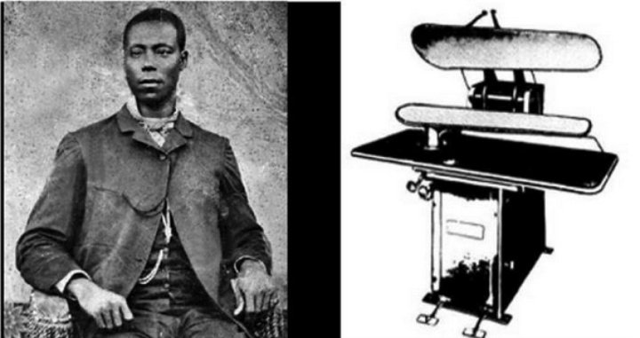
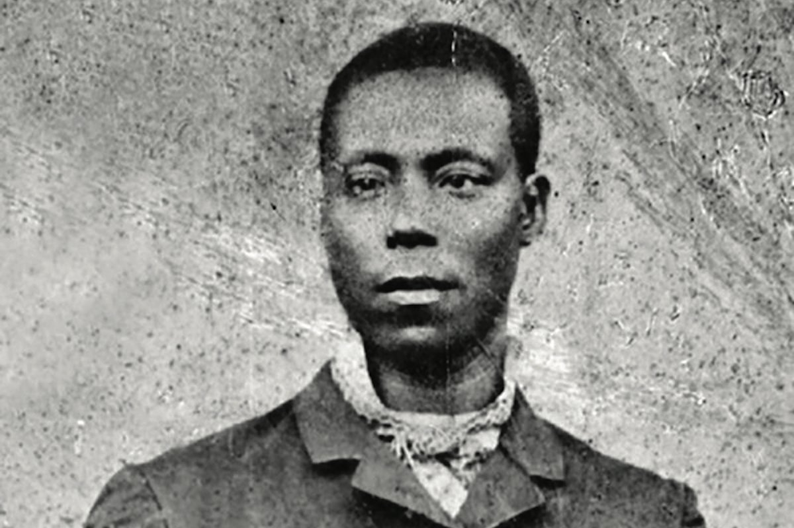

Herman Chinery-Hesse
Ghana’s founding tech entrepreneur.

Herman Chinery-Hesse was born in 1963 in Ireland. His parents were from Ghana but, due to work, they moved constantly through Herman’s childhood. They lived in Tanzania, Sierra Leone, and Switzerland in addition to Ireland and Ghana. Having parents with great jobs allowed Herman to attend the best schools and eventually attend college in the United States. Growing up, Herman always wanted to be an entrepreneur. He decided to attend Texas State University and study Industrial Technology. While at Texas State, Herman developed his computer programming ability. Herman also noticed that there was an immense amount of opportunity for new businesses all over the world.
After graduating from Texas State, Herman moved to the United Kingdom to work as a manufacturing engineer. Herman returned home for the Christmas holidays one year and decided that he should move back home and pursue his entrepreneurial dreams. Ghana was an underdeveloped country at the time, and Herman felt that the way to build his country up was through developing new businesses. Herman dreamed of creating the Ghana equivalent of tech juggernauts like Amazon, Google, etc. In 1991, he followed up on his pledge and moved back home to Ghana. Finding a job proved to be difficult until Herman was able to convince a travel agent that he could fix his broken computer for him. Herman fielded plenty of offers for similar jobs soon after helping the travel agent. This confirmed what Herman already knew, Ghana was in desperate need of tech companies. A few years later, along with classmate Joe Jackson, he founded SOFTtribe. The company started out writing programs for travel agencies. Over the years, they would go on to develop numerous software solutions for payroll, retail, accounting, and money transfers. The company has now served as the starting point for several of Ghana’s leaders in the tech industry.
The most fascinating aspect of Herman Chinery-Hesse’s life has been his ability to dream and manifest that dream. To put things into proper perspective, you must understand the dynamics of life in Ghana at the time. The country was one of the poorest countries in the sub-Saharan region and under military-rule. Most people in the region dreamed of leaving the area for a better life, while Herman dreamed of a better life in Ghana through technology. The manifestation of this very dream has sparked a change in the country. Nowadays, Ghana is one of the leaders in technology in the sub-Saharan desert. This is enormous growth for a country that historically had been against private enterprise. Prior to 1991, Ghana’s government was known to punish natives for owning property that could be deemed as an indulgence. This was due to the country’s history dating back to the slave trade. The government felt that trade with foreign countries would make the country susceptible to a similar outcome again. This train of thought is understandable given the history, but the lack of internet and foreign trade caused for the underdevelopment in Herman’s eyes. His ambitious dream of a software company based in Ghana ultimately has helped reverse the repressive outlook of the government as SOFTtribe has become successful over the years.

Since the creation of SOFTtribe, Herman has gone on to create additional tech software for the people of Ghana. His ambition has sparked a change in the mindset of many in Ghana, but Herman Chinery-Hesse serves as a source of motivation for Africans throughout the continent and the world. I anticipate hearing more about numerous contributions to Africa’s tech community in the future as it continues to expand, and we’ll have Herman to thank for that.